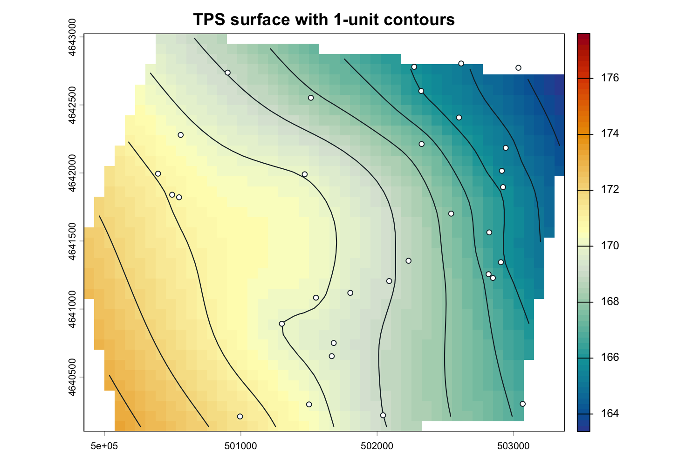

Reproducible potentiometric surfaces and hydraulic-gradient products in R
Turn groundwater-monitoring points into interpolated surfaces, contours, quicklook maps, and GIS-ready hydraulic-gradient products using a transparent, scriptable workflow.
Install from CRAN Get Started Function Reference View on GitHub
Install the released package
install.packages("potentiomap")
library(potentiomap)The website documents potentiomap 0.1.0, the CRAN release published on 2026-05-29. The GitHub repository may contain development work; use CRAN for the documented release.
Five-minute workflow
This complete example uses the released synthetic monitoring network. Its coordinates use NAD83 / UTM zone 16N (EPSG:26916). Head values are synthetic elevation units and do not imply a field vertical datum.
library(potentiomap)
data("synthetic_wells", package = "potentiomap")
points <- ps_make_points(
synthetic_wells,
x = "x", y = "y",
value = "gw_elevation",
name_col = "well_id",
crs = "EPSG:26916"
)
aoi <- ps_sample_aoi()
surfaces <- ps_interpolate(
points,
methods = "TPS",
grid_res = 100,
mask = aoi,
padding = 0
)
contours <- ps_contours(surfaces$TPS, interval = 1)
ps_quicklook(
surfaces$TPS,
contours = contours,
points = points,
title = "Synthetic TPS potentiometric surface"
)
flow <- ps_flow_arrows(
surfaces$TPS,
res_factor = 4,
scale = 150,
min_gradient = 1e-5
)
tips <- ps_arrow_vertices(flow$arrows, which = "last")
bases <- ps_arrow_vertices(flow$arrows, which = "first")
Run the executable quick start for printed object summaries, a native ps_quicklook() figure, and a hydraulic-gradient arrow map.
Core workflow
-
- Prepare observations
Standardize direct head measurements or calculate groundwater elevations from positive depth-to-water values and documented land-surface elevations.
-
- Interpolate surfaces
Use TPS, IDW, ordinary kriging, universal kriging, or a documented custom function on an explicit projected grid.
-
- Create products
Derive contours and quicklooks, then export reproducible raster and vector products for GIS workflows.
-
- Inspect gradients
Calculate gradient rasters, cartographically scaled downgradient lines, and their base or tip vertices.
Actual package outputs
The output gallery contains more than 15 generated examples: monitoring points, four interpolation methods, contours, smoothing comparisons, gradient rasters, arrow layouts, exported quicklooks, repeated events, and a public USGS example.
Why a scripted workflow?
potentiomap provides a scriptable complement to desktop GIS and contouring workflows by preserving data preparation, interpolation choices, spatial parameters, contour settings, and output generation in executable R code. Scripts make input fields, coordinate systems, grid resolution, method parameters, masks, contour intervals, arrow settings, and output paths easier to review and repeat across monitoring events and projects.
Although designed for potentiometric-surface mapping, the interpolation framework may also be useful for other continuous scalar variables observed at discrete points, provided the user applies appropriate domain-specific assumptions and interpretation.
Interpret with hydrogeologic context. Interpolated surfaces depend on monitoring-network geometry, data quality, aquifer selection, screened intervals, boundaries, and method assumptions. Hydraulic-gradient arrows point toward decreasing modeled head. They do not represent groundwater velocity, travel time, particle paths, or contaminant transport. The package is not a process-based groundwater-flow model.
Citation and availability
potentiomap 0.1.0 is available from CRAN under GPL-3. Its canonical CRAN DOI is 10.32614/CRAN.package.potentiomap. See the citation page for the complete citation and BibTeX entry. Package authorship shown on this site follows the released package metadata.